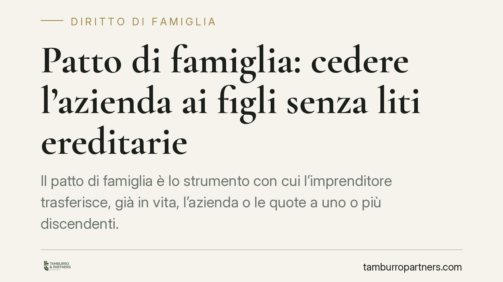

Patto di famiglia: cedere l'azienda ai figli senza liti ereditarie
Il patto di famiglia è lo strumento con cui l'imprenditore trasferisce, già in vita, l'azienda o le quote a uno o più discendenti. Deroga al divieto di patti successori e mette al riparo l'assegnatario dalle contestazioni ereditarie degli altri legittimari, ma solo se rispetta forma solenne e liquidazione delle quote. Ecco come funziona e cosa valutare prima di procedere.

Di cosa parliamo
Il passaggio generazionale è uno dei momenti più critici nella vita di un'impresa familiare. Trasferire l'azienda ai figli con un semplice testamento espone l'assegnatario al rischio che, alla morte dell'imprenditore, gli altri eredi legittimari contestino l'attribuzione chiedendo la reintegra della propria quota.
Il patto di famiglia nasce proprio per risolvere questo problema. Consente di anticipare il trasferimento in vita e di blindarlo, sottraendolo alle regole ordinarie della successione. È uno strumento tecnico, non una formalità: richiede la partecipazione di più soggetti e il rispetto di condizioni precise.
Inquadramento normativo
Il patto di famiglia è disciplinato dagli artt. 768-bis e seguenti del codice civile. L'art. 768-bis c.c. lo definisce come il contratto con cui l'imprenditore trasferisce, in tutto o in parte, l'azienda, e il titolare di partecipazioni societarie trasferisce, in tutto o in parte, le proprie quote, a uno o più discendenti.
La funzione del patto è assicurare la continuità e la stabilità dell'impresa nel passaggio tra generazioni. Questo rilievo è centrale: il patto non è un semplice atto di liberalità, ma uno strumento finalizzato a preservare l'unità aziendale.
Il patto costituisce una deroga espressa al divieto di patti successori sancito dall'art. 458 c.c., che in via generale vieta gli accordi su una successione non ancora aperta. Proprio perché incide su un ambito ordinariamente precluso, la legge impone requisiti stringenti.
La forma. Il patto deve essere stipulato per atto pubblico, a pena di nullità. È quindi necessario l'intervento del notaio. Non sono ammesse scritture private o forme semplificate: l'atto solenne è condizione di validità, non mera opportunità.
La partecipazione dei legittimari. L'art. 768-quater c.c. richiede che al contratto partecipino anche il coniuge e tutti coloro che sarebbero legittimari se la successione si aprisse in quel momento. Gli assegnatari dell'azienda devono liquidare agli altri partecipanti una somma corrispondente al valore delle quote previste dagli artt. 536 e seguenti c.c., salvo che questi vi rinuncino in tutto o in parte. La liquidazione può avvenire anche in natura.
L'esclusione da collazione e riduzione. Ai sensi dell'art. 768-quater, 4° comma, c.c., quanto ricevuto dai contraenti non è soggetto a collazione né ad azione di riduzione. Questa è la tutela più rilevante: l'assegnatario non dovrà restituire l'azienda né compensare gli altri eredi alla morte dell'imprenditore. L'esclusione opera però nei limiti di legge: quanto i legittimari ricevono a titolo di conguaglio è imputato alle rispettive quote di legittima.
Il legittimario sopravvenuto. L'art. 768-sexies c.c. tutela chi non ha partecipato al patto perché non ancora legittimario al momento della stipula (ad esempio un figlio nato dopo). All'apertura della successione costui può chiedere ai beneficiari del patto il pagamento della somma corrispondente alla quota, aumentata degli interessi legali.
Secondo la giurisprudenza di legittimità, il rispetto della forma solenne e della funzione di stabilità aziendale è imprescindibile: la violazione dei requisiti di forma determina la nullità del patto.
Cosa cambia in concreto
Per l'imprenditore, il patto offre certezza. Il trasferimento è definitivo e non riapribile in sede ereditaria, a condizione che tutti i legittimari siano stati coinvolti e liquidati.
Per il discendente assegnatario, il vantaggio è la stabilità: riceve l'azienda senza il timore di future azioni di riduzione da parte dei fratelli o del coniuge superstite.
Per gli altri legittimari, il patto comporta la rinuncia a far valere pretese ereditarie su quei beni, in cambio di una liquidazione immediata o rinunciata consapevolmente. Da qui l'importanza di una valutazione corretta del valore aziendale: un conguaglio sottostimato è fonte di contenzioso.
Cosa fare in concreto
- Rivolgetevi a un notaio: la forma di atto pubblico è obbligatoria a pena di nullità. Senza, il patto non produce alcun effetto.
- Coinvolgete tutti i legittimari: devono partecipare il coniuge e ogni soggetto che sarebbe legittimario al momento della stipula. L'assenza di anche uno solo compromette la tenuta dell'accordo.
- Fate valutare l'azienda: predisponete una perizia aggiornata del valore dell'azienda o delle quote, per calcolare correttamente i conguagli dovuti.
- Definite i conguagli per iscritto: documentate importi, modalità e tempistiche della liquidazione, o le eventuali rinunce dei legittimari.
- Verificate la coerenza con la pianificazione complessiva: integrate il patto con eventuali disposizioni testamentarie e assetti societari, evitando sovrapposizioni o contraddizioni.
Disclaimer
Contributo informativo a cura di Tamburro & Partners - Avv. Giuseppe Tamburro. Non costituisce parere legale.
Ogni famiglia ha il suo equilibrio.
Separazione, divorzio, affidamento, assegno: se vuoi un confronto riservato su una specifica situazione, scrivi allo studio. Ti rispondiamo entro un giorno lavorativo.